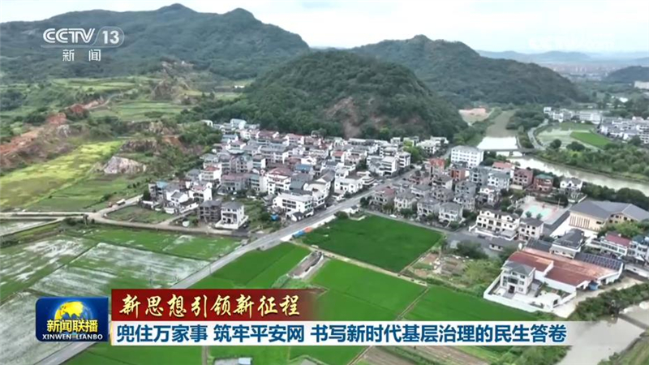
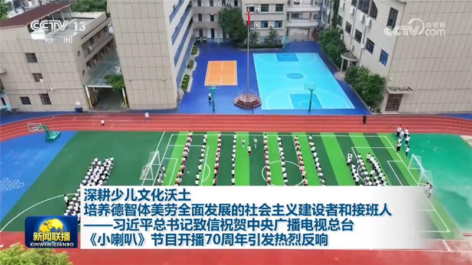
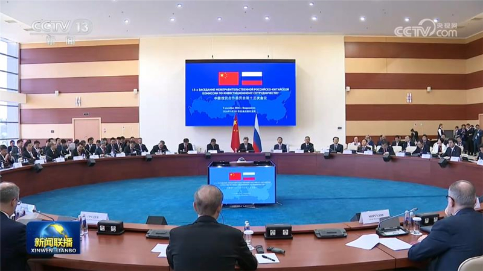
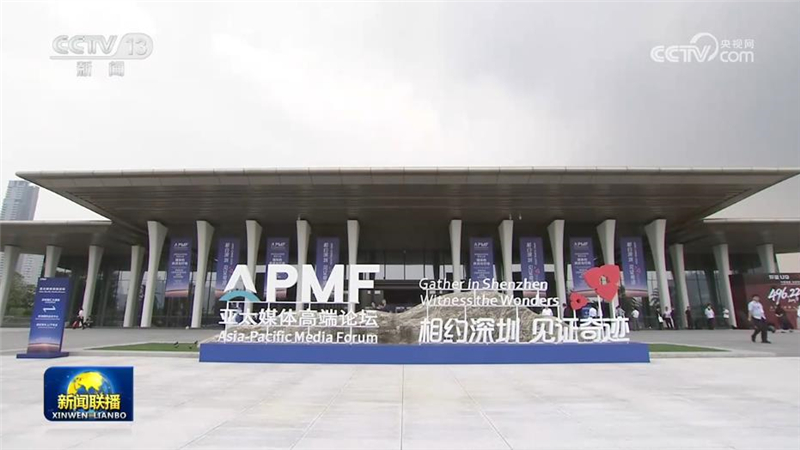
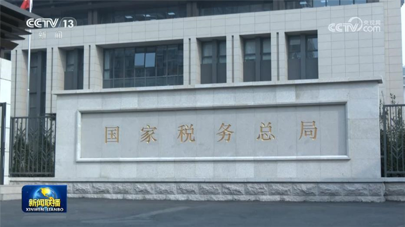
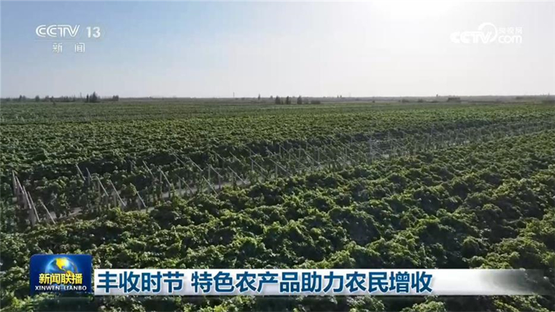
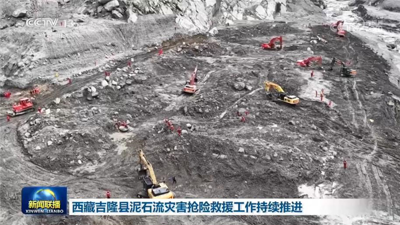
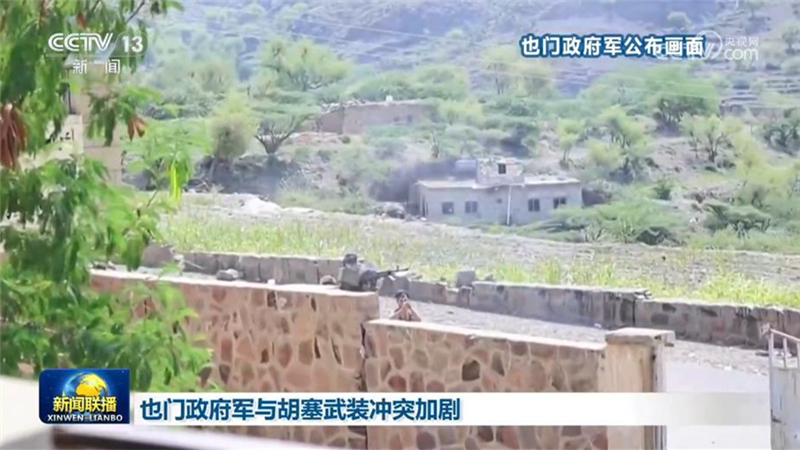
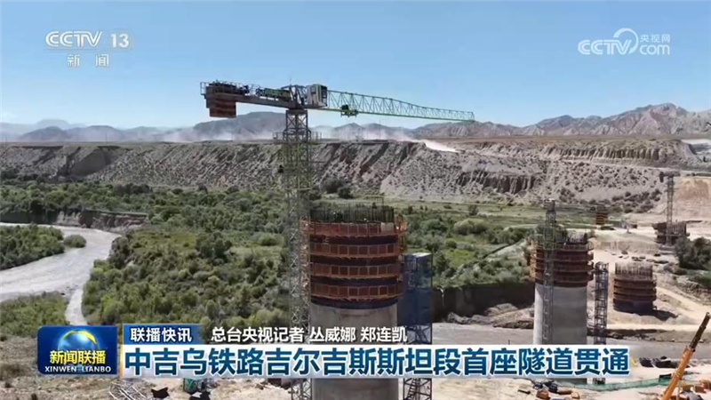

01

【新思想引领新征程】兜住万家事 筑牢平安网 书写新时代基层治理的民生答卷
基层治理是国家治理的基石，一头连着发展大局，一头牵着万家民生。习近平总书记指出，基层强则国家强，基层安则天下安，必须抓好基层治理现代化这项基础性工作。党的十八大以来，各地践行新时代“枫桥经验”，把矛盾化解在萌芽状态，把服务送到家门口，打通服务群众“最后一公里”，不断提升群众获得感、幸福感、安全感。


基层治理是国家治理的基石，一头连着发展大局，一头牵着万家民生。习近平总书记指出，基层强则国家强，基层安则天下安，必须抓好基层治理现代化这项基础性工作。党的十八大以来，各地践行新时代“枫桥经验”，把矛盾化解在萌芽状态，把服务送到家门口，打通服务群众“最后一公里”，不断提升群众获得感、幸福感、安全感。

习近平总书记致信祝贺中央广播电视总台《小喇叭》节目开播70周年，在总台干部职工和广大少儿文艺工作者、教育工作者中引发热烈反响。大家表示，将牢记总书记嘱托，紧扣时代发展脉搏，深耕少儿文化沃土，用心用情创作孩子们喜闻乐见的优秀作品，为培养德智体美劳全面发展的社会主义建设者和接班人作出更大贡献。

当地时间9月2日至4日，中共中央政治局常委、国务院副总理丁薛祥在符拉迪沃斯托克会见俄罗斯总统普京，同俄罗斯第一副总理曼图罗夫共同主持中俄投资合作委员会第十三次会议，同俄罗斯副总理诺瓦克共同主持中俄能源合作委员会第二十三次会议，并出席第八届中俄能源商务论坛开幕式。

亚太媒体高端论坛5日在广东深圳开幕。与会嘉宾认为，习近平主席提出构建亚太共同体的重大主张，为共建开放型亚太经济、推动亚太共同繁荣提供了重要指引。
商务部发布的数据显示，今年前7个月，我国服务贸易保持较快增长。知识密集型服务和传统服务出口协同发力，带动服务贸易结构持续优化。

国家税务总局发布的最新税收数据显示，今年上半年，各项支持城市更新的税费优惠政策累计减税降费及退税4870亿元。

眼下，各地特色农产品陆续收获，助力农民增收、乡村振兴。天南地北，瓜果飘香，秋梨进入集中采收季。在重庆云阳，不少梨园依山而建，针对坡陡路窄，大型车辆不方便进园作业的问题，今年，当地在收获季引入无人机调运，运输效率成倍提升。山西运城盐湖区的15万亩梨果陆续成熟，当地在品种研发上下功夫，新品种果肉细腻，汁水丰沛，一经上市就受到青睐。

西藏吉隆县泥石流灾害抢险救援工作持续推进。截至9月4日18时，泥石流灾害已造成31人遇难，531人失联。
《促进数字化绿色化协同转型发展实施方案（2026—2030年）》印发

也门政府军与胡塞武装在也门西部多地冲突加剧。据外媒报道，截至4日，本轮冲突已造成129人死亡。也门政府军消息人士称，也门政府军当天派出战机对荷台达省和塔伊兹省的胡塞武装控制区发动空袭。
俄罗斯国防部4日称，俄军过去一周对乌克兰军事目标实施了1次大规模打击和17次集群打击，控制了哈尔科夫、顿涅茨克等多个地区的15个居民点。

中吉乌铁路吉尔吉斯斯坦段首座隧道贯通